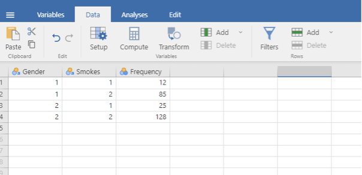
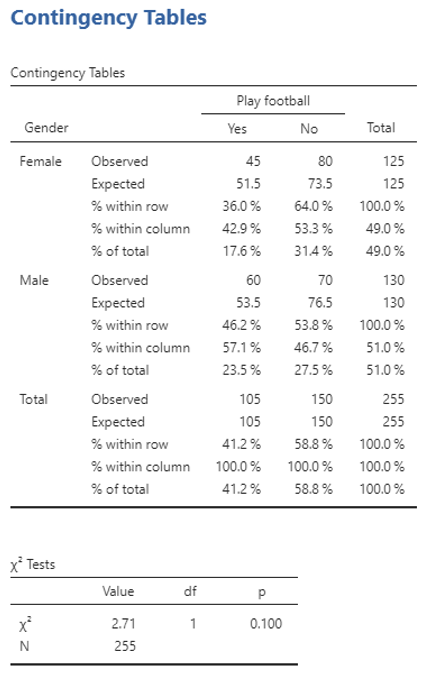

Week 10 : Tests of difference: Chi-Squared
This week you will be learning about
Learning Objectives
| Quantitative Methods | |
|---|---|
| Hypothesis testing |
| Data Skills | |
|---|---|
| Working with the Jamovi editor | |
| Performing a chi-squared test in Jamovi | |
| Plot basic graphs in Jamovi |
| Open Science | |
|---|---|
| Working with openly available research data |
Today you will just be familiarising yourself with the Chi-Squared test of difference. The Chi-Squared test is a non-parametric test of difference. It is used when…
- You want to know about differences between groups
- Are there more females than males studying Psychology?
- You want to know whether there is an association between two categorical variables
- Is there an association between gender and smoking?
- Your groups are independent
- Each observation only contributes to one cell of the analysis (e.g. gender)
- You have categorical data (otherwise known as on the nominal level of measurement)
- Frequency or number of observations in a number of categories e.g. 10 male vs 50 females enrolled in Psychology
- Your data violates parametric assumptions
- Your data is not normally distributed
How to perform a chi-square in Jamovi
Worked example- are males more likely to smoke than females?
The table underneath contains information about smoking status distributed by gender. This information can be entered in to Jamovi providing that appropriate variables are constructed. In this example there are three variables, namely ‘smoking status’, ‘gender’, and ‘frequency’. In Point 2 illustrates these variables in Jamovi ‘Variable view’. Point 3 illustrates these variables and the associated data in Jamovi ‘Data view’
| Smokes | Does not smoke | |
|---|---|---|
| Male | 25 | |
| Female | 12 | |
- To learn how to perform a Chi-square test you may open the example data in this week’s Canvas folder and work through the steps detailed below – to open the file, simply double click on it. If you have Jamovi installed on your computer, then it will automatically open
- Check that all relevant details are included in variable view – click on ‘variables’ in the top tool bar (it should look like the screen below). You should add your own labels here too. Also check that the values are specified for ‘gender’ and ‘smokes’.
- To edit your variables, simply double tap on the variable of choice in the ‘variable view’ or tap on ‘edit’ in the tool bar
- You will see all the details about the variable, which you can change.
- Click on ‘data’ and check that a row defines each cell of your frequency table (i.e. you should have 1 row for females who smoke, 1 for females who do not smoke, 1 for males who smoke and 1 for males who do not smoke). The total observed frequency of each category should be in the corresponding frequency column.

- Now you are ready to perform the Chi squared test. Click on: Frequencies > Independent Samples
- Add ‘Gender’ to the rows box, ‘Smokes’ to the Columns box, and ‘Frequency’ to the counts box
- Click on statistics and tick the Chi Squared test
- Next, select the cells button and select expected counts AND row, column and total
- You can also play around with plots to visualise your data
- On the right-hand side, you will see your results
How to report these results in APA format
A Pearson Chi-Square was used to identify whether gender influenced smoking frequency. Results of the chi-square showed no significant difference in smoking frequency between genders (χ² (1) = .742, p = .389).
You can find the χ symbol on word by going to Insert > Symbol. You might need to look under More Symbols if you haven’t used this symbol before.
Exercises
A chi-square analysis was carried out to investigate the relationship between gender and smoking frequency, the Jamovi output showing the results of the analysis is shown below.
What are the observed frequencies for males and females who did and did not smoke?
| Did smoke | Did not smoke | |
|---|---|---|
| Male | ||
| Female |
| Did smoke | Did not smoke | |
|---|---|---|
| Male | 50 |
128 |
| Female | 12 |
140 |
How would you report the results of the chi-square analysis in APA format?
A Pearson Chi-Square was used to identify whether gender influenced smoking frequency. Results of the chi-square showed a significant difference in smoking frequency between genders (χ² (1) = 21.9, p < .001).
What do these results show?
Think about the question we were trying to answer and what the results actually mean in real terms. Is there a difference between the groups? If there is, which group has a higher frequency of smokers?
As the results were statistically significant, there is an association between smoking frequency and gender, with males being more likely to be a smoker than women.
The table underneath shows how often men and women play football. Enter this data into Jamovi following the same format as in the previous example.
What are the results of the chi-square?
Are the results significant?
What do the results mean and what can you conclude?
| Play football | Do not play football | |
|---|---|---|
| Male | 60 |
70 |
| Female | 45 |
80 |
Take a look at the Jamovi output

χ² (1) = 2.71, p = .100
No
The results of the chi-square show no significant association between gender and whether or not you play football. Neither gender is significantly more likely to play football.